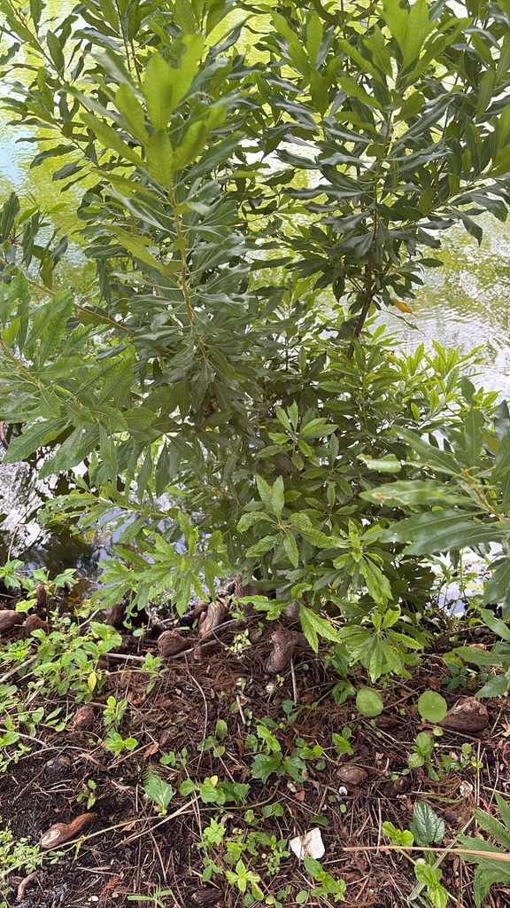

- The berries are coated in aromatic wax — the same wax colonial Americans boiled off to make bayberry candles. The candles burn cleaner than tallow and smell better. The tradition survives; bayberry candles are still sold today.
- Yellow-rumped Warblers eat the berries so exclusively during migration that older field guides call the species the Myrtle Warbler. They can digest the waxy coating; most birds cannot.
- The roots fix atmospheric nitrogen, improving the soil as the plant grows. It is doing the same work as a legume, quietly and without acknowledgment.
- Nobody at Palma Sola ever comments on the wax myrtles. They line the far side of the cypress pond, seclude the back of the park, and get trimmed occasionally when they block the path. That is the entirety of the relationship.
Native to all of Florida, including the Keys, and along the Atlantic and Gulf coasts from New Jersey to Texas. Occurs in a wide range of habitats: wetland edges, river margins, pine flatwoods, sand dunes, and upland forests. The species epithet cerifera means wax-bearing. Family: Myricaceae.
- The wax myrtles at the park line the far side of the cypress pond, forming a screen that separates the pond from the back section where the plumeria and palms are. They do this job without being asked about, without being photographed, and without anyone stopping to read a sign — there is no sign. They have been trimmed twice, when they encroached on the path between the pond and the plumeria.
- That is the sum of the human attention they have received.
- What they have been doing the whole time, unobserved: fixing nitrogen from the air through a symbiotic relationship with soil microorganisms, improving the pond bank soil at a rate that exceeds what most legumes manage. Stabilizing the shoreline. Producing winter berries that feed migrating warblers, bluebirds, and tree swallows. Hosting the larvae of the Red-banded Hairstreak butterfly.
- Providing cover for birds, turtles, and small animals along the water.
- The bayberry candle tradition in America — still alive as a holiday custom — traces directly to this plant and its northern relative. Colonial Americans boiled the waxy berry coating off by the bushel to make candles that burned cleaner and smelled better than tallow. It was labor-intensive enough that bayberry candles were considered a luxury.
- The Yellow-rumped Warbler, one of the most common winter migrants through Florida, was once called the Myrtle Warbler specifically because of its relationship with this plant. It can digest the waxy berry coating that most other birds cannot. When the warblers move through in winter, the wax myrtles along the pond are doing real ecological work.
The waxy gray berries are a critical winter food source for migrating birds, particularly Yellow-rumped Warblers — which are chemically adapted to digest the wax coating — along with tree swallows, bluebirds, catbirds, and many other species.
The plant is a documented larval host for the Red-banded Hairstreak butterfly and the Polyphemus Moth. The dense evergreen canopy provides year-round nesting and cover for birds, turtles, and small animals along the pond edge.
The nitrogen-fixing root system enriches the surrounding soil, benefiting neighboring plants and contributing to pond bank stability. Few native plants deliver this range of ecological services with this little fanfare.
Inconspicuous, in small catkins in spring. Dioecious — male and female flowers on separate plants. Female plants produce fruit; at least one male plant nearby is needed for pollination.
Small waxy gray-blue berries in clusters, ripening late summer to early fall. The waxy coating is aromatic and historically used for candle-making. Critically important as winter wildlife food.
Small, narrow, olive-green, aromatic when crushed. Evergreen. Slightly leathery.
Multi-trunked shrub to small tree, typically 10 to 15 feet tall and 8 to 10 feet wide, occasionally to 20 feet. Smooth light gray bark on multiple twisted trunks. Fast-growing. Spreads by root suckers to form colonies.
Along the far side of the cypress pond. The narrow olive-green aromatic leaves and smooth gray multi-stemmed trunks are the year-round markers. In late summer and fall, clusters of small gray waxy berries on female plants. Crush a leaf to release the distinctive bayberry fragrance.
The leaves and seeds have been used as a bay-leaf substitute, though the berries aren't typically eaten and it isn't a significant food plant.
It's generally non-toxic to people, dogs, and cats.
NOMENCLATURE: Often still listed as Myrica cerifera. Modern treatments (USDA PLANTS, Flora of the Southeastern US) place it in Morella as Morella cerifera, separating the evergreen, fleshy-fruited southern species from the deciduous true Myrica. Both names appear in current literature; family Myricaceae is unchanged.


- © Randall Carter (CC-BY-NC), via iNaturalist
- © Zailibeth Perez (CC-BY-NC), via iNaturalist